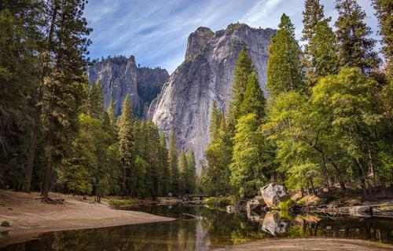
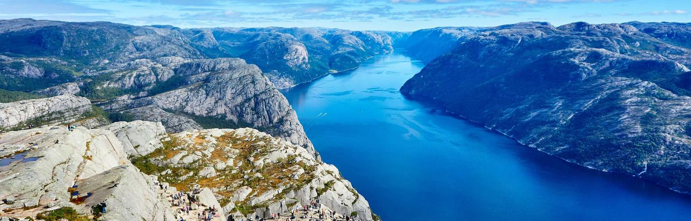
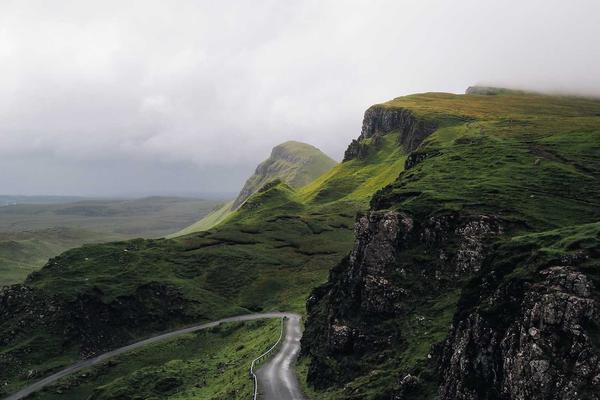
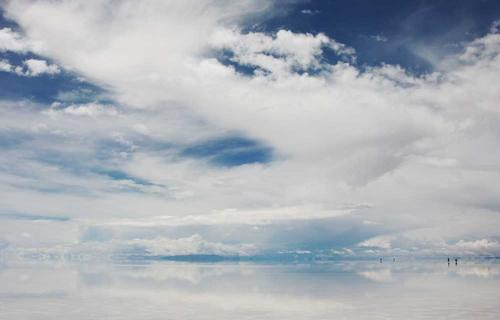

Torre de Pisa
Campanário do século XII, com quase 60 metros de altura. A inclinação surgiu ainda durante a construção, por causa do solo instável, e virou o símbolo da cidade.

Na região da Toscana, às margens do rio Arno, Pisa é conhecida no mundo todo por sua torre inclinada. Mas a cidade guarda muito mais: catedrais medievais, praças históricas, uma tradicional vida universitária e a autêntica gastronomia italiana.
Prepare a mala e venha descobrir uma das cidades mais fascinantes da Itália.

Conheça os pontos mais marcantes de Pisa. Cada um guarda séculos de história, arte e arquitetura que tornaram a cidade um dos destinos mais visitados da Itália.

Campanário do século XII, com quase 60 metros de altura. A inclinação surgiu ainda durante a construção, por causa do solo instável, e virou o símbolo da cidade.
Catedral medieval iniciada em 1063, no coração da Piazza dei Miracoli. É um dos maiores exemplos do estilo românico pisano, com fachada em mármore branco.

O maior batistério da Itália, construído entre os séculos XII e XIV. É famoso pela acústica impressionante sob a sua grande cúpula.
O rio que corta Pisa, margeado pelos elegantes "lungarni". Um passeio perfeito ao pôr do sol, entre pontes e palácios históricos.